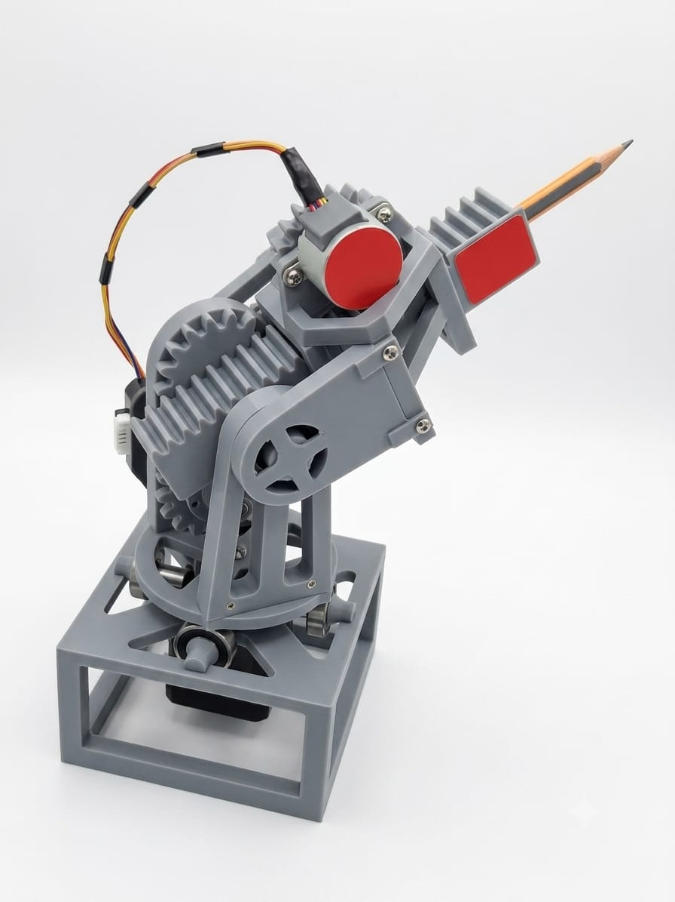

Proyecto de Mecatrónica

Este proyecto consiste en el diseño y construcción de un brazo robótico controlado mediante Arduino.
El sistema permite controlar la posición del brazo mediante coordenadas, utilizando motores paso a paso y diferentes sistemas de transmisión.
En este apartado se muestra el funcionamiento del brazo robótico y el proceso de control mediante Arduino.
Video de demostración próximamente.
El control del brazo se realiza mediante Arduino. El programa recibe las coordenadas deseadas y las convierte en movimientos para los diferentes motores.
Próximamente se incluirá el código utilizado en el proyecto.
El brazo fue diseñado utilizando herramientas de modelado CAD. En esta sección se incluirán los planos, dimensiones y características mecánicas del robot.
El usuario introduce las coordenadas deseadas y el sistema calcula los movimientos necesarios para posicionar el brazo.
El controlador genera las señales correspondientes para los motores paso a paso.